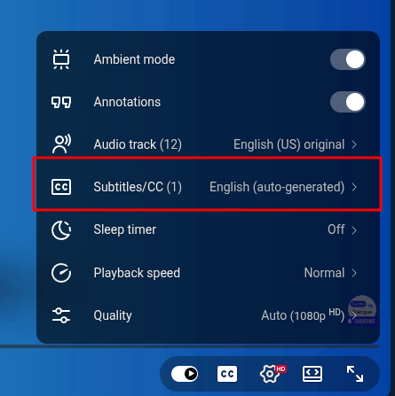
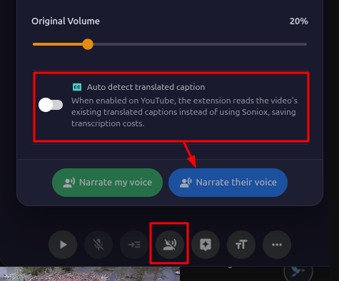

التثبيت
ثبّت إضافة Live Translator على أي متصفح مبني على Chromium مثل Chrome أو Edge أو Brave أو Arc أو Opera وغيرها.
اضغط على زر Add To Chrome. سيتم تحميل ملف الإضافة على جهازك.

افتح صفحة إدارة الإضافات في متصفحك:
- Chrome/Brave/Arc: اكتب
chrome://extensionsفي شريط العنوان واضغط Enter. - Edge: اكتب
edge://extensionsفي شريط العنوان واضغط Enter.
فعّل خيار Developer mode من الزاوية العلوية اليمنى للصفحة.

اسحب ملف .zip الذي حمّلته وأفلته على صفحة الإضافات.

من المفترض أن ترى الآن أيقونة Live Translator في شريط أدوات المتصفح. الإضافة مثبّتة وجاهزة للإعداد.
المنصات المدعومة
يعمل Live Translator على المواقع والمنصات التالية. ما عليك سوى فتح أي منها والضغط على أيقونة الإضافة لبدء الترجمة.
| المنصة | ما يمكنك فعله |
|---|---|
| Google Meet | ترجمة الاجتماعات، نطق صوتك، إرسال عبر الدردشة |
| Zoom (الويب) | ترجمة الاجتماعات، نطق صوتك، إرسال عبر الدردشة |
| Microsoft Teams (الويب) | ترجمة الاجتماعات، نطق صوتك، إرسال عبر الدردشة |
| YouTube | ترجمة الفيديوهات، ملء السياق تلقائيًا من عنوان الفيديو |
| WhatsApp Web | ترجمة المكالمات، نطق صوتك |
| ترجمة الفيديوهات والبث المباشر | |
| TikTok | ترجمة الفيديوهات |
| Douyin | ترجمة الفيديوهات |
| Vimeo | ترجمة الفيديوهات |
| Dailymotion | ترجمة الفيديوهات |
| Udemy | ترجمة فيديوهات الدورات التعليمية |
| Domestika | ترجمة فيديوهات الدورات التعليمية |
تلتقط الإضافة صوت التبويب مباشرةً، لذا فهي تعمل مع أي صوت يُشغَّل في تبويب المتصفح على المواقع المدعومة — لا حاجة لإعداد ميكروفون منفصل لسماع صوت الطرف الآخر.
نظرة عامة على الإضافة
لمحة سريعة عن الواجهة الرئيسية وأين يقع كل عنصر.

تتكون لوحة Live Translator من الأقسام الرئيسية التالية:
- شريط العنوان — زر الإعدادات، زر تفعيل وضع الترجمة المرئية، زر الإغلاق. إذا توفّر تحديث جديد، ستظهر شارة هنا.
- اختيار اللغة — قائمتان منسدلتان: "لغتي" (اللغة التي تتحدث بها) و"لغتهم" (اللغة التي تريد الترجمة منها).
- منطقة النص — حيث يظهر النص المترجم لحظيًا، مرتّبًا حسب المتحدث.
- شريط التحكم — زر البدء/الإيقاف/الإيقاف المؤقت، زر الميكروفون، إعدادات النطق، مساعد الذكاء الاصطناعي، حجم الخط، التحميل، وخيارات أخرى.
يمكنك سحب اللوحة من شريط العنوان لنقلها إلى أي مكان على الشاشة، وتغيير حجمها بسحب الحواف. هكذا لن تحجب المحتوى المهم أثناء الاجتماعات أو مشاهدة الفيديوهات.
الحصول على مفتاح Soniox API
Soniox هو محرك التعرف على الكلام والترجمة الفورية. تحتاج إلى مفتاح Soniox API لاستخدام Live Translator. مطلوب
مفتاح Soniox API مطلوب لكي تعمل الإضافة. بدونه، لن تتمكن الإضافة من تحويل الكلام إلى نص أو ترجمة أي صوت.
افتح https://console.soniox.com/signup في متصفحك. أنشئ حسابًا باستخدام بريدك الإلكتروني أو حساب Google.
بعد تسجيل الدخول، انتقل إلى قسم API في لوحة تحكم Soniox. يمكنك أيضًا الذهاب مباشرة إلى دليل البدء في Soniox للحصول على تعليمات خطوة بخطوة.
انسخ مفتاح API — ستحتاجه في الخطوات التالية.

أضف وسيلة دفع إلى حسابك في Soniox. يمكنك استخدام بطاقة ائتمان أو PayPal أو وسائل دفع أخرى. يعمل Soniox API بنظام الدفع حسب الاستخدام — تدفع فقط مقابل ما تستهلكه.

تحتاج إلى إيداع مبلغ لا يقل عن 1 دولار في حسابك لاستخدام API. يمكنك إيداع مبلغ أكبر إذا رغبت بذلك.
الحصول على مفتاح OpenAI API (اختياري)
مفتاح OpenAI API اختياري — تحتاجه فقط إذا كنت تريد استخدام أصوات OpenAI للنطق أو ميزة مساعد الذكاء الاصطناعي. Pro
إذا لم يكن لديك حساب OpenAI، اضغط على "Sign Up" وأنشئ حسابًا جديدًا. إذا كان لديك حساب بالفعل، سجّل الدخول.
اضغط على "+ Create new secret key"، وأعطه اسمًا مثل "Live Translator"، ثم اضغط على "Create secret key".
انسخ المفتاح واحفظه فورًا — لن يعرضه OpenAI إلا مرة واحدة.

انتقل إلى إعدادات الفوترة وأضف وسيلة دفع. يعمل OpenAI API بنظام الدفع حسب الاستخدام — تدفع فقط مقابل ما تستهلكه.

إذا كنت تريد النطق الصوتي فقط (تحويل النص إلى كلام)، يمكنك استخدام أصوات Google Translate مجانًا بدلاً من ذلك. مفتاح OpenAI مطلوب فقط إذا أردت أصوات OpenAI المميزة أو ميزة مساعد الذكاء الاصطناعي.
إدخال مفاتيح API
بعد الحصول على مفاتيح API، أدخلها في صفحة إعدادات Live Translator.
يمكنك فتح الإعدادات بأي من الطرق التالية:
- اضغط على أيقونة الترس (⚙) في أعلى يمين لوحة المترجم.
- اضغط بزر الماوس الأيمن على أيقونة Live Translator في شريط الأدوات ← "Options".
- انتقل إلى صفحة الإضافات في متصفحك ← ابحث عن Live Translator ← "Details" ← "Extension options".

في صفحة الإعدادات، اضغط على "Soniox" في الشريط الجانبي. الصق مفتاح Soniox API في حقل الإدخال. يُحفَظ المفتاح تلقائيًا.

اضغط على "OpenAI" في الشريط الجانبي. الصق مفتاح OpenAI API في حقل الإدخال. يُحفَظ المفتاح تلقائيًا.

تُخزَّن مفاتيح API على جهازك فقط باستخدام نظام التخزين الآمن للإضافات في Chrome. لا تُرسَل أبدًا إلى خوادم Live Translator — بل تُستخدَم فقط للتواصل المباشر مع Soniox وOpenAI.
شراء مفتاح الترخيص
يفتح لك مفتاح الترخيص ميزات Pro مثل النطق الصوتي وتحميل ملفات SRT ومساعد الذكاء الاصطناعي والمزيد.
زُر الصفحة الرئيسية لـ Live Translator على https://translate.ezitech.io/#pricing وانتقل إلى قسم الأسعار، أو اضغط على رابط "Purchase a license" في صفحة إعدادات الإضافة.

اختر إحدى الخطتين:
- شهري — 5.99 دولارًا شهريًا
- سنوي — 59 دولارًا سنويًا (وفّر حوالي 18%)
يمكنك الحصول على فترة تجريبية مجانية لمدة 7 أيام لتجربة ميزات Pro. بعد انتهاء الفترة التجريبية، يمكنك شراء ترخيص لمواصلة استخدام ميزات Pro.
ستُحوَّل إلى صفحة الدفع على Polar. أدخل بريدك الإلكتروني وبيانات الدفع، ثم أتمّ عملية الشراء.

بعد الدفع، ستتلقى مفتاح الترخيص عبر البريد الإلكتروني. يبدو مفتاح الترخيص كرمز طويل (مثل: LT-XXXX-XXXX-XXXX-XXXX). انسخ هذا المفتاح.
يمكنك طلب استرداد المبلغ خلال 30 يومًا من تاريخ الدفع عبر التواصل مع phampdoan@gmail.com.
تفعيل الترخيص
بعد الشراء، فعّل مفتاح الترخيص في إعدادات الإضافة.
افتح إعدادات الإضافة (أيقونة الترس أو اضغط بزر الماوس الأيمن ← Options). اضغط على "License" في الشريط الجانبي. الصق مفتاح الترخيص في حقل الإدخال واضغط "Activate". ستتحقق الإضافة من ترخيصك مع الخادم.

بعد التفعيل، سترى حالة الترخيص والبريد الإلكتروني المرتبط به وتاريخ انتهاء الصلاحية. أصبحت جميع ميزات Pro مفتوحة الآن.

إذا كنت قد فعّلت الترخيص مسبقًا على جهاز آخر، يمكنك استخدام خيار "Force Activate" لنقل الترخيص إلى جهازك الحالي. يمكن تفعيل كل ترخيص على جهاز واحد فقط في الوقت نفسه.
المجاني مقابل الاحترافي
إليك ما يمكنك فعله بالنسخة المجانية وما يتطلب ترخيص Pro.
| الميزة | مجاني | Pro |
|---|---|---|
| الترجمة الفورية | ✓ | ✓ |
| أكثر من 60 لغة | ✓ | ✓ |
| تسميات المتحدثين | ✓ | ✓ |
| سحب اللوحة وتغيير حجمها وتصغيرها | ✓ | ✓ |
| التحكم بحجم الخط | ✓ | ✓ |
| تحميل النص المكتوب (TXT/JSON) | — | ✓ |
| تحميل النص المكتوب (SRT) | — | ✓ |
| نطق صوتهم (TTS) | — | ✓ |
| نطق صوتي (مترجم فوري) | — | ✓ |
| إرسال الترجمة عبر الدردشة | — | ✓ |
| وضع الترجمة المرئية | — | ✓ |
| مساعد الذكاء الاصطناعي | — | ✓ |
| إعدادات السياق | ✓ | ✓ |
| أسماء المتحدثين | ✓ | ✓ |
بدء جلسة ترجمة
تعرّف على كيفية بدء الترجمة في اجتماع أو فيديو.
انتقل إلى أي منصة مدعومة (مثل Google Meet أو Zoom أو YouTube وغيرها) وانضم إلى اجتماع أو شغّل فيديو.
اضغط على أيقونة Live Translator في شريط أدوات المتصفح. ستظهر لوحة المترجم على الصفحة. يمكنك أيضًا الضغط على الأيقونة العائمة التي تظهر في الصفحة.
استخدم القائمتين المنسدلتين في أعلى اللوحة:
- "My language" — اللغة التي تتحدث بها أنت (مثل: العربية).
- "Their language" — اللغة التي يتحدث بها الآخرون والتي تريد ترجمتها (مثل: الإنجليزية).

اضغط على زر Start (أيقونة التشغيل ▶) في شريط التحكم أسفل اللوحة.
قد يطلب منك المتصفح إذنًا لالتقاط الصوت — اضغط "Allow" واختر التبويب الذي تريد التقاط صوته.

عندما يتحدث أي شخص، سترى النص الأصلي والنص المترجم يظهران في منطقة النص. تُجمَّع السطور تلقائيًا حسب المتحدث.

يتم التمرير تلقائيًا لعرض أحدث نص. إذا مررت لأعلى لقراءة نص سابق، يتوقف التمرير التلقائي مؤقتًا. اضغط على زر "Scroll to latest" الذي يظهر للعودة إلى النص المباشر.
أزرار التحكم: إيقاف مؤقت، استئناف، إنهاء
تعرّف على أزرار التحكم في جلسة الترجمة.
| الزر | وظيفته |
|---|---|
| Start (▶) | يبدأ جلسة ترجمة جديدة ويمسح أي نص سابق. |
| Pause (⏸) | يوقف الترجمة مؤقتًا مع الاحتفاظ بالنص. يستمر التقاط الصوت لكن يتوقف عرض النص. |
| Resume (▶) | يستأنف الترجمة بعد الإيقاف المؤقت. يظهر النص الجديد بعد المحتوى السابق. |
| End (⏹) | ينهي الجلسة بالكامل. يبقى النص على الشاشة حتى تبدأ جلسة جديدة. يوقف التقاط الصوت ويُغلق الميكروفون والنطق الصوتي. |
تغيير اللغات
يمكنك تغيير لغات الترجمة في أي وقت.
اضغط على قائمة "My language" أو "Their language" المنسدلة في أعلى اللوحة.
تدعم القائمة أكثر من 60 لغة مرتبة أبجديًا. مرّر لأسفل أو اكتب للبحث عن اللغة المطلوبة، ثم اضغط عليها لاختيارها.
إذا كانت هناك جلسة نشطة، سيؤدي تغيير اللغة إلى إعادة تشغيل الترجمة تلقائيًا بزوج اللغات الجديد. يُحفَظ اختيارك للمرة القادمة.
تشغيل الميكروفون
فعّل الميكروفون حتى تُترجَم كلماتك أيضًا إلى جانب صوت الاجتماع أو الفيديو.
في شريط التحكم، اضغط على أيقونة الميكروفون. تُضاء الأيقونة عندما يكون الميكروفون مُفعّلًا.

إذا كانت هذه المرة الأولى، سيطلب المتصفح إذنًا لاستخدام الميكروفون. اضغط "Allow".
الميكروفون مُغلق بشكل افتراضي عند فتح اللوحة. فعّله فقط إذا كنت تريد تحويل كلامك إلى نص وترجمته. عند الضغط على End، يُغلق الميكروفون تلقائيًا.
تغيير حجم الخط
اضبط حجم النص لقراءة مريحة.
في شريط التحكم، اضغط على زر حجم الخط (أيقونة Aa). ستظهر قائمة بثلاثة أحجام:
- صغير — عرض مضغوط يتسع لمزيد من النص
- متوسط — الحجم الافتراضي المتوازن
- كبير — أسهل في القراءة من مسافة بعيدة
اختر الحجم الذي يناسبك. يُطبَّق التغيير فورًا ويُحفَظ للمرة القادمة.

أسماء المتحدثين
عيّن أسماء حقيقية للمتحدثين لتتمكن من معرفة من قال ماذا بسهولة في النص. مجاني
في شريط التحكم، اضغط على زر "More" (أيقونة ⋯). ثم اضغط على زر "Speaker Settings".
ستُفتح نافذة إعدادات المتحدثين.

سترى قائمة بالمتحدثين الذين تم رصدهم (Speaker 1، Speaker 2، إلخ). اكتب الاسم الحقيقي بجانب كل متحدث (مثل: "أحمد"، "سارة"). اضغط "Add row" إذا احتجت إلى إضافة المزيد.
اضغط "Save". ستستخدم جميع سطور النص — السابقة والقادمة — الأسماء التي عيّنتها.
النطق الصوتي (تحويل النص إلى كلام)
اجعل الترجمات تُقرأ لك بصوت مسموع حتى تتمكن من الاستماع بدلًا من القراءة. هذه ميزة "نطق صوتهم". Pro
في شريط التحكم، اضغط على زر النطق (أيقونة مكبر الصوت). ستُفتح نافذة إعدادات النطق الصوتي.

اختر مزود تحويل النص إلى كلام:
- Google Translate (مجاني) — يعمل بدون مفتاح API. أصوات جيدة بأكثر من 60 لغة.
- OpenAI (مميز) — جودة أعلى وأصوات أكثر طبيعية. يتطلب مفتاح OpenAI API.
اختر صوتًا من القائمة المنسدلة واضغط "Test" لسماع عينة.
اضبط سرعة الصوت ومستوى الصوت حسب الحاجة.
اضغط على زر "Narrate Their Voice" في النافذة. الآن، كلما ظهرت ترجمة جديدة، ستُقرأ لك بصوت مسموع.
للإيقاف، اضغط على زر النطق مجددًا ثم اضغط "Stop".
النطق حسب ترجمة YouTube
استخدم الترجمة النصية المترجمة في YouTube كمصدر للنطق، بحيث تقرأ الإضافة بنفس اللغة التي اخترتها مسبقًا في YouTube. ويمكن أن يوفّر هذا حتى 99.9% من تكلفة Soniox عند الاستخدام على YouTube. Pro
لكي تعمل الميزة بشكل صحيح، اختر لغة الترجمة في YouTube أولًا، ثم ابدأ النطق من الإضافة.
في مشغل YouTube، فعّل الترجمة النصية واختر لغة الترجمة التي تريد سماعها (مثل: الفيتنامية).

افتح إعدادات النطق في الإضافة وفعّل Auto detect translated caption.

اضغط "Narrate Their Voice". سيعمل النطق وفق لغة الترجمة التي اخترتها في YouTube.
إذا أردت سماع النطق باللغة الفيتنامية، اضبط ترجمة YouTube أولًا على الفيتنامية. بعد ذلك فعّل Auto detect translated caption وابدأ "Narrate Their Voice".
نطق صوتي (وضع المترجم الفوري)
تحدّث بلغتك ودع الإضافة تنطق ترجمة كلامك للمشاركين الآخرين — كأن لديك مترجمًا فوريًا شخصيًا. Pro
تعمل هذه الميزة على Google Meet وZoom (الويب) وMicrosoft Teams (الويب) وWhatsApp Web. يجب أن يكون الميكروفون مُفعّلًا وجلسة الترجمة قيد التشغيل.
اضغط على زر النطق في شريط التحكم لفتح نافذة إعدادات النطق الصوتي.
في النافذة، ابحث عن قسم "Narrate My Voice". اختر الصوت والمزود المفضل لك (Google أو OpenAI). يمكنك تعيين صوت مختلف لنطق "صوتي" ونطق "صوتهم".
اضغط "Test" لسماع عينة من الصوت المختار.

اضغط على "Start Narrate My Voice". عندما تتحدث، يحدث التالي:
- يُحوَّل كلامك إلى نص بلغتك
- يُترجَم النص إلى اللغة الأخرى
- يُنطَق بصوت مسموع في الاجتماع حتى يسمعه الطرف الآخر
يُكتم الميكروفون تلقائيًا أثناء تشغيل الصوت المترجم لمنع الصدى.

اضغط على زر النطق ثم "Stop"، أو اضغط End لإنهاء الجلسة بالكامل (وهذا يوقف النطق أيضًا).
يمكنك تشغيل وضع نطق واحد فقط في كل مرة — إما "نطق صوتي" أو "نطق صوتهم"، وليس كليهما معًا. تتغير أيقونة شريط الأدوات لتوضيح الوضع النشط.
إرسال الترجمة عبر الدردشة
أرسل كلامك المترجم تلقائيًا كرسائل نصية في دردشة الاجتماع. Pro
في شريط التحكم، ابحث عن زر إرسال الدردشة (بجانب أيقونة الميكروفون). اضغط عليه لتفعيله — يتحول الزر إلى اللون الأخضر عند التفعيل.

عندما يكون الميكروفون مُفعّلًا وجلسة الترجمة قيد التشغيل، سيُدرَج النص المترجم تلقائيًا في مربع الدردشة الخاص بالاجتماع ويُرسَل.
تعمل هذه الميزة على Google Meet وZoom (الويب) وMicrosoft Teams (الويب).
هذه الميزة مفيدة عندما لا تتوفر ميزة "Narrate My Voice" على منصتك، أو إذا كنت تريد استخدام النطق الصوتي والدردشة النصية معًا في الوقت نفسه.
وضع الترجمة المرئية
انتقل إلى شريط ترجمة بسيط يشبه ترجمات الأفلام يعرض فقط آخر ترجمة أسفل الشاشة. Pro
في شريط عنوان لوحة المترجم، اضغط على أيقونة الترجمة المرئية (أيقونة CC).
ستُستبدَل اللوحة الكاملة بشريط ترجمة رفيع أسفل الشاشة.

اضغط على أيقونة الضبط (الترس) على شريط الترجمة لضبط:
- الشفافية — حرّك المؤشر لجعل الشريط أكثر أو أقل شفافية.
- حجم الخط — اختر من بين صغير أو متوسط أو كبير.
يمكنك أيضًا سحب شريط الترجمة لتحريكه، وتغيير حجمه بسحب الحواف.

اضغط على زر الإغلاق (✕) على شريط الترجمة للعودة إلى لوحة المترجم الكاملة.
مساعد الذكاء الاصطناعي
احصل على شروحات وإجابات مولّدة بالذكاء الاصطناعي بناءً على سياق المحادثة، مباشرةً من النص. Pro
يتطلب مساعد الذكاء الاصطناعي إدخال مفتاح OpenAI API في الإعدادات.
شرح سطر معين
عند تمرير المؤشر فوق أي سطر في النص، ستظهر أيقونة الذكاء الاصطناعي (🤖).
سيُفتح مساعد الذكاء الاصطناعي في نافذة منفصلة. سيستخدم سياق النص الكامل والسطر المحدد لتقديم شرح مفصّل.

توليد إجابة
سيولّد مساعد الذكاء الاصطناعي إجابة مقترحة بناءً على ما قيل في المحادثة. يمكنه أيضًا البحث في الإنترنت لتقديم إجابات أكثر دقة.

فتح لوحة المساعد
يمكنك أيضًا فتح لوحة مساعد الذكاء الاصطناعي مباشرة من زر المساعد (أيقونة 🤖) في شريط التحكم. يفتح هذا نافذة دردشة قابلة للسحب يمكنك فيها كتابة أي سؤال. يملك المساعد إمكانية الوصول إلى النص الكامل كسياق.

إعدادات السياق
زوّد الإضافة بمعلومات حول موضوع المحادثة لتحسين دقة الترجمة. مجاني
اضغط على زر "More" (⋯) في شريط التحكم، ثم اضغط على "Context".

يمكنك تقديم:
- المجال / الموضوع — ما موضوع المحادثة (مثل: "مؤتمر طبي"، "اجتماع فريق هندسة البرمجيات").
- المصطلحات الرئيسية — المصطلحات التقنية أو أسماء العلم التي قد يصعب التعرف عليها (مثل: "Kubernetes، API gateway، microservices").
- معلومات المتحدثين — أسماء المشاركين وأدوارهم (مثل: "د. سميث — طبيب قلب، يقدّم العرض").
اضغط "Apply" لإرسال هذا السياق إلى محرك الترجمة للجلسة الحالية.
إذا كانت لديك اجتماعات متكررة بمواضيع مشابهة، اضغط على "Save Preset" لحفظ السياق الحالي كقالب. في المرة القادمة، ما عليك سوى تحميل القالب بدلًا من إعادة كتابة كل شيء.
يمكنك أيضًا استيراد/تصدير القوالب كملفات JSON لمشاركتها أو الاحتفاظ بنسخة احتياطية منها.
عند استخدام Live Translator على YouTube، يمكن ملء حقول السياق تلقائيًا بعنوان الفيديو ووصفه. هذا يساعد محرك الترجمة على فهم موضوع الفيديو بشكل أفضل.
تحميل النص المكتوب
احفظ النصوص المترجمة كملفات للرجوع إليها لاحقًا أو استخدامها في أدوات أخرى. Pro
بعد جلسة الترجمة (أو أثناءها)، اضغط على زر التحميل (أيقونة ↓) في شريط التحكم. ستُفتح نافذة تحميل النص المكتوب.

اختر الصيغة المناسبة:
| الصيغة | الأنسب لـ |
|---|---|
| TXT | ملف نصي بسيط مع الأوقات وأسماء المتحدثين. سهل القراءة. |
| JSON | صيغة بيانات منظمة. مناسب للمعالجة بأدوات أو برامج أخرى. |
| SRT (الأصلي) | ملف ترجمة مرئية بالنص الأصلي. يُستخدم في برامج تحرير الفيديو. |
| SRT (مترجم) | ملف ترجمة مرئية بالنص المترجم. يُستخدم في برامج تحرير الفيديو. |
اضغط على زر التحميل للصيغة التي اخترتها. يُنشأ الملف في متصفحك ويُحفظ في مجلد التحميلات الافتراضي.
تُنشأ ملفات النص بالكامل في متصفحك. لا تُرسَل أي بيانات إلى أي خادم أثناء عملية التحميل.
التحقق التلقائي من التحديثات
تتحقق الإضافة تلقائيًا من وجود تحديثات في كل مرة تفتحها.
عندما يتوفر إصدار جديد، ستظهر شارة "Update available" في شريط عنوان لوحة المترجم.
اضغط على الشارة للانتقال إلى صفحة التثبيت حيث يمكنك تحميل أحدث إصدار. اتبع نفس خطوات التثبيت للتحديث.
حل المشكلات
المشكلات الشائعة وكيفية حلها.
ظهور رسالة "No Soniox API key"
لا يتم التقاط أي صوت
- تأكد أنك ضغطت "Allow" عندما طلب المتصفح إذن التقاط الصوت.
- تأكد أنك اخترت التبويب الصحيح للمشاركة عند ظهور الطلب.
- جرّب تحديث الصفحة وفتح المترجم مجددًا.
- تأكد أن الاجتماع أو الفيديو يحتوي بالفعل على صوت يُشغَّل.
الترجمة تبدو غير دقيقة
- تأكد أن قائمة "Their language" مضبوطة على اللغة الصحيحة التي يتحدث بها الآخرون.
- استخدم إعدادات السياق لتوفير معلومات عن الموضوع والمصطلحات الرئيسية.
- تأكد من وضوح جودة الصوت — الضوضاء في الخلفية قد تؤثر على الدقة.
"Narrate My Voice" — الآخرون لا يسمعون الترجمة
- تأكد أنك على منصة مدعومة (Google Meet، Zoom Web، Teams Web، WhatsApp Web).
- تأكد أن جلسة الترجمة قيد التشغيل وأن الميكروفون مُفعّل.
- تأكد أن لديك ترخيص Pro مُفعّل.
- جرّب تحديث صفحة الاجتماع والبدء من جديد.
ميزات OpenAI لا تعمل
- تحقق من إدخال مفتاح OpenAI API بشكل صحيح في الإعدادات.
- تأكد أن حسابك في OpenAI يحتوي على وسيلة دفع مُفعّلة برصيد كافٍ.
- إذا لم تكن بحاجة لميزات OpenAI، استخدم أصوات Google Translate للنطق بدلًا من ذلك (مجاني ولا يحتاج مفتاح API).
الإضافة لا تظهر على الموقع
- يعمل Live Translator فقط على المنصات المدعومة. لن يظهر على المواقع غير المدعومة.
- إذا كان الموقع مدعومًا لكن الإضافة لا تظهر، جرّب تحديث الصفحة.
- تأكد أن الإضافة مُفعّلة في صفحة إدارة الإضافات في متصفحك.
التواصل والدعم
تحتاج مساعدة؟ لديك سؤال أو اقتراح؟
تواصل مع المطور:
- البريد الإلكتروني: ezsolu.io@gmail.com
- الموقع الإلكتروني: https://translate.ezitech.io
- WhatsApp: +84 355 561 599
- Telegram: EziTech
إذا كانت لديك أفكار لميزات جديدة أو تحسينات، يسعدنا أن نسمع منك. أرسل لنا بريدًا إلكترونيًا باقتراحاتك!